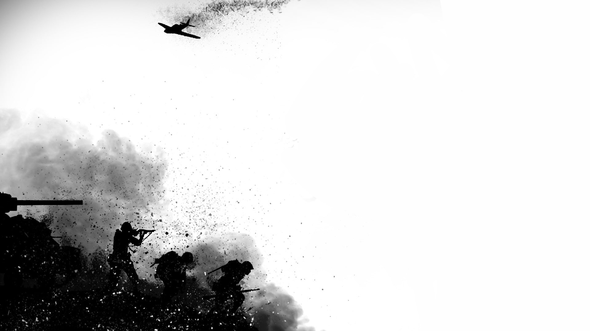

Europe, Mideast, Africa, Pacific, Atlantic, Mediterranean, North Sea, Baltic Sea
Allied Powers casualties: 22 million
Central Powers casualties: 37.5 million
Allied Victory
The war fought between July 28, 1914, and November 11, 1918, was known at the time as the Great War, the War to End War, and (in the United States) the European War. Only when the world went to war again in the 1930s and ’40s did the earlier conflict become known as the First World War. Its casualty totals were unprecedented, soaring into the millions. World War I is known for the extensive system of trenches from which men of both sides fought. Lethal new technologies were unleashed, and for the first time a major war was fought not only on land and on sea but below the sea and in the skies as well. The two sides were known as the Allies or Entente—consisting primarily of France, Great Britain, Italy, Russia, and later the United States—and the Central Powers, primarily comprised of Austria-Hungary (the Habsburg Empire), Germany, and the Ottoman Empire (Turkey). A number of smaller nations aligned themselves with one side or the other. In the Pacific Japan, seeing a chance to seize German colonies, threw in with the Allies. The Allies were the victors, as the entry of the United States into the war in 1917 added an additional weight of men and materiel the Central Powers could not hope to match. The war resulted in a dramatically changed geo-political landscape, including the destruction of three empires: Austro-Hungarian, Ottoman and Russian. New borders were drawn at its conclusion and resentments, especially on the part of Germany, left festering in Europe. Ironically, decisions made after the fighting ceased led the War to End War to be a significant cause of the Second World War.
Know MoreEurope, Pacific, Atlantic, South-East Asia, China, Middle East, Mediterranean and Northern Africa.
Allies:
Axis:
Allied victory
The carnage of World War II was unprecedented and brought the world closest to the term “total warfare.” On average 27,000 people were killed each day between September 1, 1939, until the formal surrender of Japan on September 2, 1945. Western technological advances had turned upon itself, bringing about the most destructive war in human history. The primary combatants were the Axis nations of Nazi Germany, Fascist Italy, Imperial Japan, and the Allied nations, Great Britain (and its Commonwealth nations), the Soviet Union, and the United States. Seven days after the suicide of Adolf Hitler, Germany unconditionally surrendered on May 7, 1945. The Japanese would go on to fight for nearly four more months until their surrender on September 2, which was brought on by the U.S. dropping atomic bombs on the Japanese towns of Nagasaki and Hiroshima. Despite winning the war, Britain largely lost much of its empire, which was outlined in the basis of the Atlantic Charter. The war precipitated the revival of the U.S. economy, and by the war’s end, the nation would have a gross national product that was nearly greater than all the Allied and Axis powers combined. The USA and USSR emerged from World War II as global superpowers. The fundamentally disparate, one-time allies became engaged in what was to be called the Cold War, which dominated world politics for the latter half of the 20th century.
The most destructive war in all of history, its exact cost in human lives is unknown, but casualties in World War II may have totaled over 60 million service personnel and civilians killed. Nations suffering the highest losses, military and civilian, in descending order, are: